Yammer.com : enterprise social networking
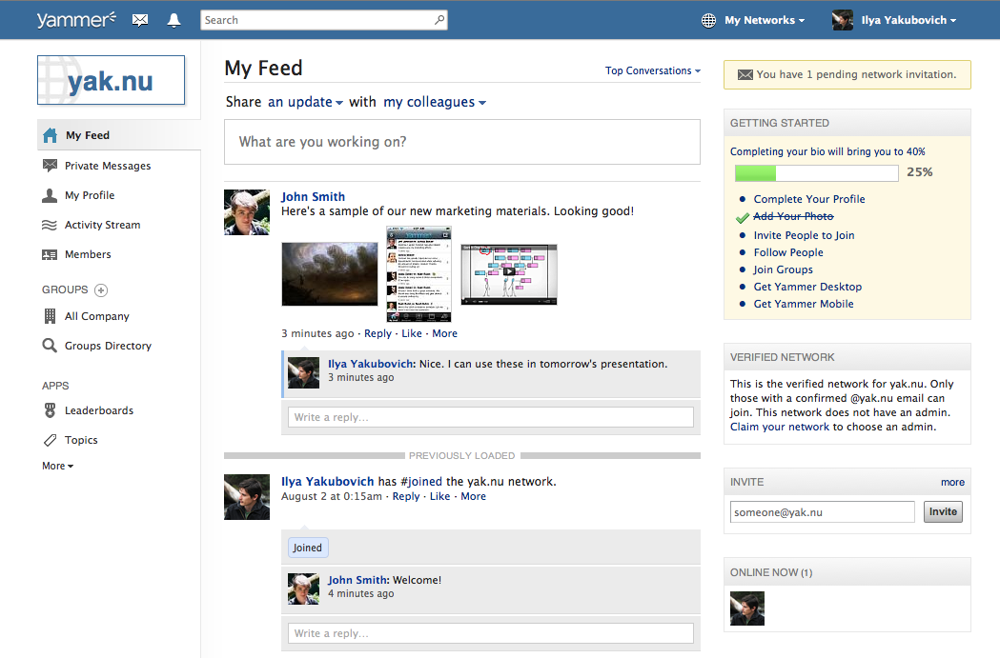 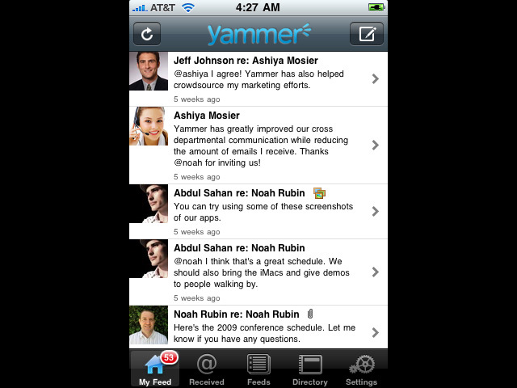 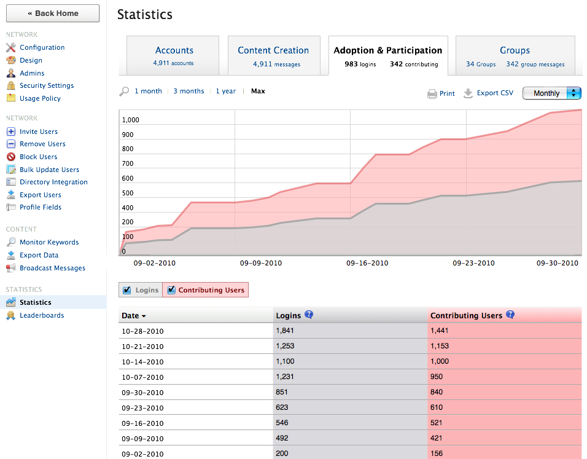 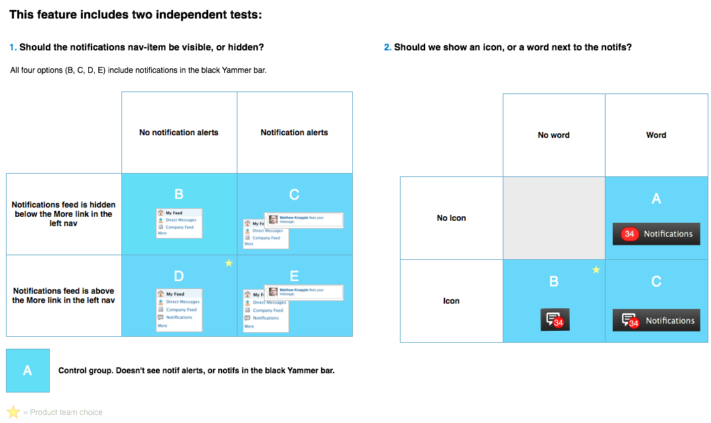 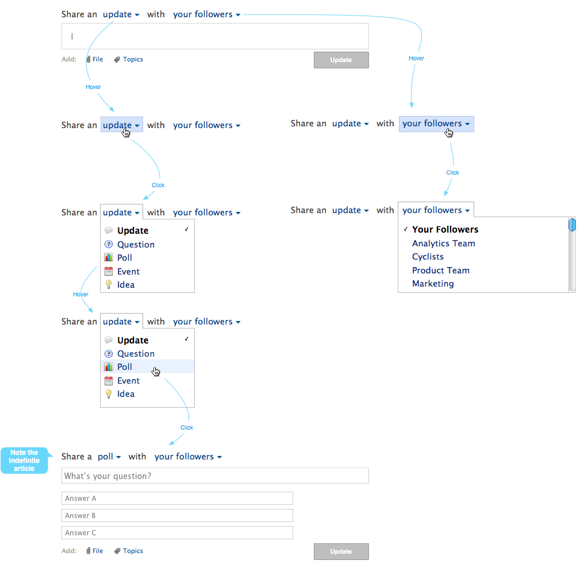 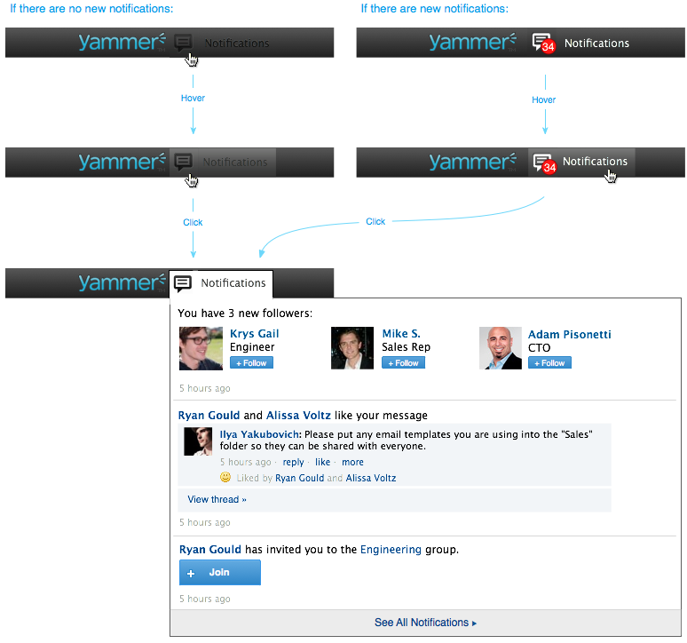Yammer is a social network for internal enterprise collaboration. Basically, an internal Facebook.
As a member of the founding team, I saw the product grow from a concept to a powerful tool used by 100,000 business worldwide, and the team grow from a handful of engineers to 150 employees.
Early on, I was in charge of product management, visual design, user experience / interaction design, and some of the implementation (HTML/CSS). As the team expanded, I came to specialize in user experience, leaving the coding to more experienced developers.
I was the lead designer for the Yammer website, AIR desktop app, and iPhone/Blackberry apps.
The above images are a small sample of the deliverables that I created while working for Yammer, including mockups, A/B test specifications, and user flow diagrams.
Geni.com : collaborative genealogy
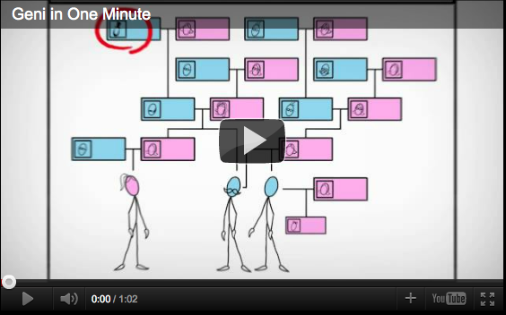 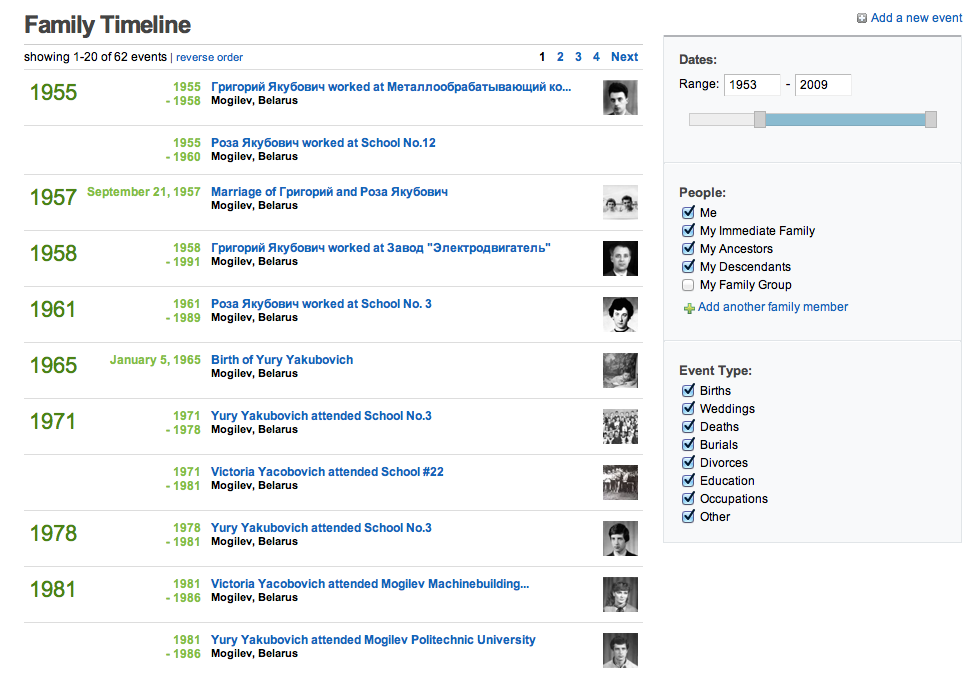 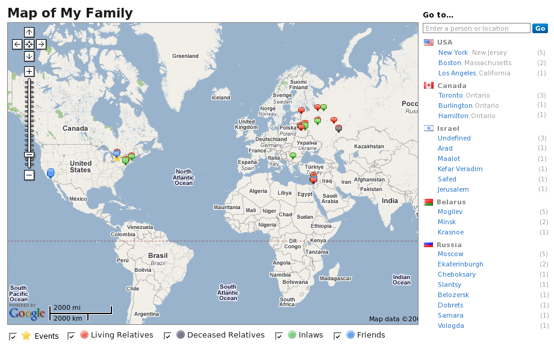 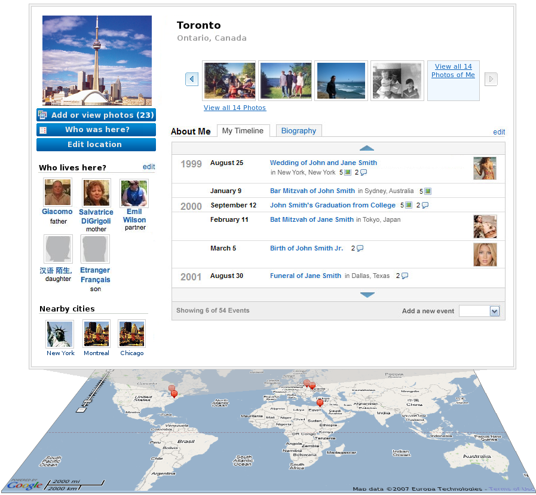 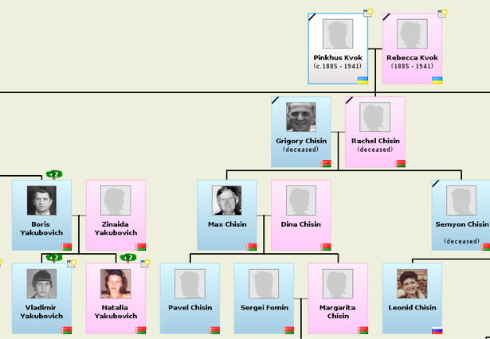Everyone's related, but we don't always know how.
Geni helps people rediscover those lost connections, and share family stories through collaborative family trees, photos, timelines, maps, etc.
I joined the Geni team in 2007 and helped in the conception, design, and implementation of new features like Timelines, Places, Tree Printing, and Tree Merging.
Educ8: tutor network (under development)
A non-profit web application to enable tutors to advertise their services, and for students and parents to find tutors by location, qualifications, and keywords.
The site is set to launch this summer.
Savvy Survey: facebook app
I designed and developed this small Facebook app in 2008, as a side project.
It was inspired by existing user behavior: many of my female college friends used the Notes application on Facebook to create and share surveys like "Which superhero are you?" or "Things you love".The application - written in PHP - allowed users to do the same thing, but with a friendlier user interface.